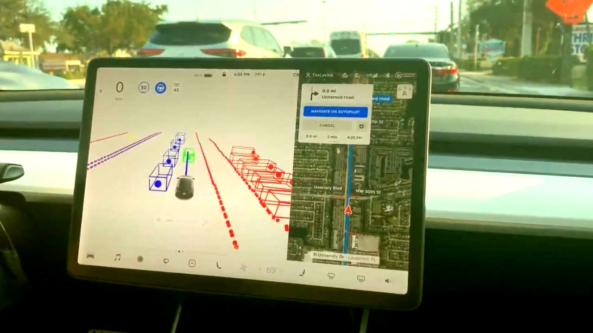

Hace unos meses estaba viendo a un streamer comentando sobre un tema complejo, y dice algo similar a "le pregunté a la IA sobre el tema para tener una opinión imparcial". Como analizaremos a continuación esta idea de que las IAs son objetivas está lejos de la realidad, pero la confianza que tenemos en la tecnología moderna, se ha traducido a estas nuevas herramientas.
La vida moderna está organizada alrededor de un sinfín de herramientas tecnológicas. Celulares, televisores "smart", cámaras de tráfico, lectores de tarjeta de crédito y un largo etcétera. En general, esperamos que las mismas funcionen correctamente, procesando millones de operaciones por segundo, con una precisión imposible para une humane. Pero no debemos confundir precisión con objetividad. Todas las tecnologías contienen los sesgos de quienes las diseñan, las implementan y las revisan, y ahora, con estos modelos de "inteligencia artificial", de quienes las entrenan.
Algunos ejemplos
Para ilustrar mejor la situación, presentamos algunos ejemplos, ya que los sesgos afectan poco en lo individual, pero tienen grandes efectos cuando afectan en tecnologías masivas, como veremos en los próximos párrafos.
En 2017, cuando Apple (el fabricante de iPhone), implementó Face ID en sus dispositivos, muches usuaries Asiátiques, se dieron cuenta de que sus familiares y amigues, podían desbloquear su dispositivo (Zhao, 2017). Un estudio posterior (Grother et al., 2019) demostró que la mayoría de estos algoritmos de reconocimiento facial tenían problemas en personas no caucásicas, llevando a identificaciones erróneas. Un inconveniente cuando une familiar puede desbloquear mi celular, un problema ético y legal, cuando la tecnología es utilizada por la policía o el estado.

En los últimos años, muchos fabricantes de autos han introducido diversas tecnologías bajo la idea de "autos que se manejan solos". Algo que parece del futuro, y que personalmente, habiendo viajado en los mismos es impresionante. Lo que no es tan impresionante, y resulta un poco escalofriante, es que ha habido varios estudios (Li et al., 2024) que demuestran que estos sistemas no son tan buenos identificando a personas de color y a niñes. Algo increíblemente preocupante, que se convierte en deprimente al pensar que versiones de estos mismos algoritmos los utilizan los ejércitos con sus drones para identificar objetivos.
Y los ejemplos no tienen siempre que ver con tecnologías complejas como reconocimientos de individuos. En los últimos años, se han empezado a utilizar sistemas similares para escanear candidates laborales. En un ejemplo especialmente ridículo, el análisis de uno de estos algoritmos, reveló que el sistema determinó que les mejores candidates eran aquellos que se llamaban Jared y habían jugado lacrosse (un deporte de la élite estadounidense) en la secundaria (Gershgorn, 2022).
Como los ejemplos listados, hay millares. La mayoría con poca difusión fuera de los círculos tecnológicos, y ni hablar de algún tipo de advertencia por parte de les mismes desarrolladores. Porque el gran problema con los sesgos es que es difícil reconocerlos en une, y aun cuando los conocemos, es difícil evitar que nos influencien.
La IA generativa
Como comentamos al principio, la IA es un caso más donde la tecnología se percibe como imparcial, aun cuando no lo es. Lo peligroso esta vuelta es que hay formas de controlar esos sesgos directamente. Ya hay reportes de varias instancias donde las empresas abusan de la necesidad insaciable de información de estos sistemas para introducir sus opiniones (Koebler, 2026). Así como sabemos que estos modelos pueden ser guiados para expresar ciertas opiniones, o censurar otras.
También hay sesgos más profundos en la sociedad actual que se refuerzan automáticamente. Por ejemplo, ¿cuántas veces la IA producirá imágenes de hombres trans cuando se le pida una foto de un "hombre"? ¿Cuántas historias queer serán producidas cuando se le pida "cuentos románticos"? ¿Cuántas recetas veganas serán producidas cuando se les pida "algo rápido para comer"? ¿Cuántas personas racializadas tendrá un video sobre "una familia ideal"?
Ese es el problema de los sesgos, están escondidos, nos manejan sin saberlo. Lo político, lo social, la sexualidad y la identidad, todo está atravesado por nuestra parcialidad. Cuando hacemos uso de las tecnologías, no estamos sacando los sesgos, simplemente estamos usando aquellos de quien la produjo.
¿Es posible una tecnología sin sesgos?
Nuestra existencia como humanas está influenciada por nuestras creencias, experiencias y opiniones; por lo tanto, resulta imposible ser imparcial. Pero sí podemos reconocer la existencia de los sesgos, aun sin tener un detalle exhaustivo de los mismos. Ese es el primer paso, la aceptación de su existencia, y reconocer la necesidad de reducir su influencia.
Este reconocimiento tiene que trasladarse sí o sí al análisis que hacemos cuando utilizamos cualquier tecnología, por avanzada que sea. Asumiendo que tiene como mínimo el sesgo del status quo, y siempre con una pequeña sospecha de que hay sesgos más fuertes que desconocemos.
Referencias
Gershgorn, D. (2022). Companies are on the hook if their hiring algorithms are biased. Quartz. https://qz.com/1427621/companies-are-on-the-hook-if-their-hiring-algorithms-are-biased
Grother, P., Ngan, M., & Hanaoka, K. (2019). Face Recognition Vendor Test (FRVT). NIST. https://nvlpubs.nist.gov/nistpubs/ir/2019/NIST.IR.8280.pdf
Koebler, J. (2026). Companies Are Using Reddit to Manipulate ChatGPT and Google AI Search. 404 Media. https://www.404media.co/companies-are-using-reddit-to-manipulate-chatgpt-and-google-ai-search/
Li, X., Chen, Z., Zhang, J. M., Sarro, F., Zhang, Y., & Liu, X. (2024). Bias Behind the Wheel: Fairness Testing of Autonomous Driving Systems. https://arxiv.org/abs/2308.02935
Zhao, C. (2017). Is the iPhone X Racist? Apple Refunds Device That Can't Tell Chinese People Apart, Woman Claims. Newsweek. https://www.newsweek.com/iphone-x-racist-apple-refunds-device-cant-tell-chinese-people-apart-woman-751263